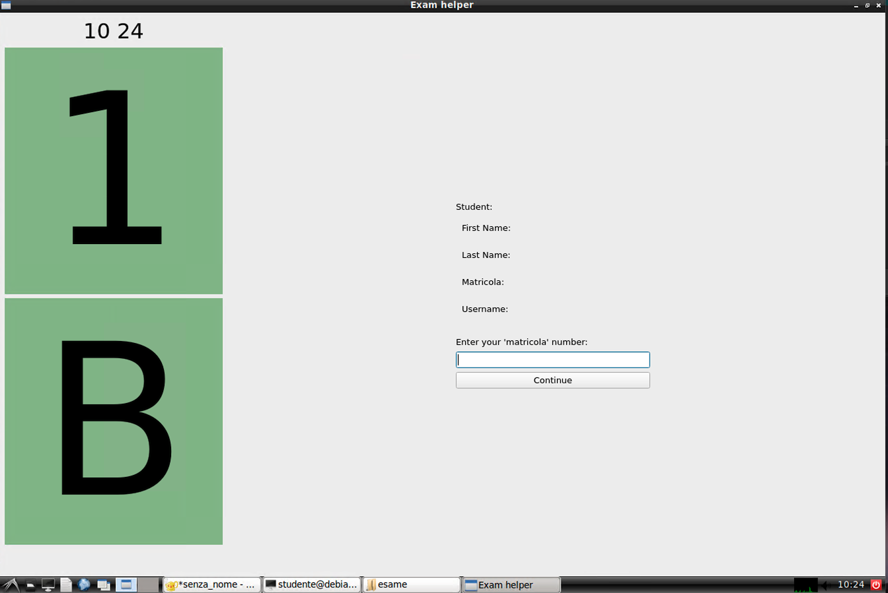
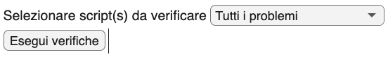
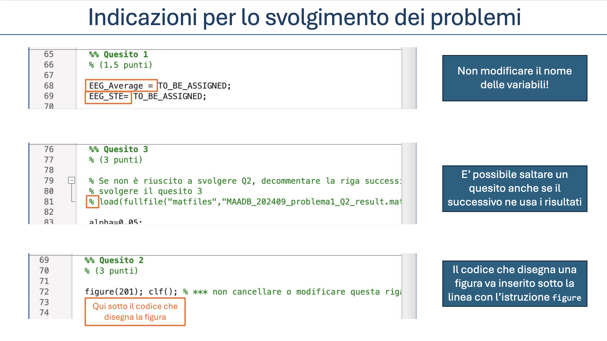

Fasi dell'esame
Attenzione
Questa sezione è ancora in fase di revisione. Le informazioni qui contenute potrebbero non essere complete o aggiornate.
Operazioni preliminari
La convocazione
La convocazione avviene di norma entro due giorni feriali dopo la chiusura delle prenotazioni ed è inviata via email agli studenti che si sono prenotati su Infostud. Nella convocazione sono contenuti:
- l'orario di inizio dell'esame (quello riportato su infostud è indicativo)
- l'aula in cui si svolgerà l'esame (di norma a Via Tiburtina 205)
- l'incoraggiamento a leggere queste istruzioni
- l'invito, in caso di impossibilità a presentarsi all'esame, a darne comunicazione ai docenti
La postazione di lavoro
L'accesso all'aula d'esame è consentito nei 10 minuti precedenti l'orario di inizio della prova. Si raccomanda presentarsi almeno con questo anticipo, sia per consentire che le operazioni preliminari siano completate senza ritardi che per non perdere eventuali comunicazioni.
Di norma, l'assegnazione delle postazioni di lavoro è proiettata sugli schermi dell'aula. (In alcuni casi, potrebbe essere stampata ed affissa sulla porta d'ingresso.) In caso di dubbi, è consigliabile chiedere assistenza ai docenti.
La postazione è individuata da un numero e una lettera, ad esempio "1A", "2C", etc. Il numero indica la fila, a partire dalla cattedra. La lettera indica la postazione nella fila, a partire da sinistra.
Attenzione
Lo studente è tenuto ad occupare la postazione indicata e ogni cambio di postazione deve essere autorizzato da un docente.
È necessario tenere un documento di identità sulla scrivania, mentre andranno rimossi tutti gli oggetti non necessari. Gli oggetti consentiti includono penna/matita, bottiglia d'acqua, medicinali. Gli astucci dovranno essere riposti nello zaino/borsa. Il telefonino dovrà essere spento e riposto riporlo nello zaino/borsa. I fogli di carta (bianchi) saranno forniti dai docenti.
Zaini, borse e giacche devono essere fuori portata, ad esempio in prossimità del muro.
Attenzione
Essere colti durante lo svolgimento della prova con oggetti non consentiti comporta potenzialmente l'esclusione dalla prova.
Si raccomanda attenzione per evitare che azioni magari innocue, come ad esempio indossare un orologio smart, possano essere interpretate come tentativi di ottenere un vantaggio illecito.
Una volta avviata la prova, non sarà permesso lasciare la postazione fino a quando non si sarà consegnato lo svolgimento. Si invita a essere previdenti e utilizzare saggiamente il tempo che precede l'avvio della prova e la pausa.
Identificazione studente
L'identificazione avviene in due fasi:
- appena lo studente prende posto nella postazione assegnata
- quando il docente verifica il documento di identità
La prima fase avviene tramite l'applicazione Exam helper, che è già avviata sulla postazione e consente di inserire la propria matricola e confermare la propria identità.

Tip
Se l'applicazione Exam helper non è già avviata, è possibile farlo
utilizzando lo script start-examhelper.sh presente nella cartella esame sul desktop.
Il documento di identità dovrà rimanere sulla scrivania durante la prova, in modo che i docenti possano verificarlo senza interrompere lo svolgimento.
Parte 1: Problemi in ambiente Matlab
Le modalità di svolgimento sono analoghe a quelle descritte durante le esercitazioni. È importante avere cognizione dell'elenco dei nomi delle variabili a cui è richiesto che siano assegnati i risultati, descritto nella traccia. La traccia contiene anche indicazioni sulla forma (scalare, vettore colonna, etc.) che deve assumere la variabile.
Startup
Attenzione
Non avviare il Matlab manualmente, ma utilizzare lo script
avvia-problemi.sh descritto di seguito.
Lo script avvia-problemi.sh è presente nella cartella MAADB_Part1 che apparirà
nella cartella esame sul desktop all'avvio della prova. Lo script
avvia l'applicazione Matlab e configura l'ambiente per l'esame, in
modo che sia possibile svolgere i problemi senza ulteriori operazioni
manuali.
Lo script:
- imposta
MAADB_Part1come cartella di lavoro del Matlab - configura il matlab per rendere disponibile il toolbox di verifica formale degli svolgimenti
- rinomina i file
problema*_MATRICOLA.mper includere il numero di matricola dello studente - apre nell'editor gli script descritti al punto precedente
- avvia il live script
check_exam.mlx, che consente di verificare lo stato di avanzamento dello svolgimento e di eseguire le verifiche formali sulle variabili.
Per avviare lo script, è sufficiente un doppio click su di esso nella
cartella MAADB_Part1 presente nella cartella esame sul desktop, e confermare
che si desidera eseguire lo script.
Procedura alternativa
Se lo script non funziona, è possibile avviare manualmente il Matlab e seguire le istruzioni riportate nella sezione "Malfunzionamento dello script avvia-problemi.sh" in Appendice.
Verifica formale degli svolgimenti
Il tool di verifica formale è un live script che automatizza le verifiche su nomi e sulla forma delle variabili, e fornisce all'esaminando un report sullo stato di completamento dell'esame.
Questo tool viene aperto automaticamente all'avvio del Matlab. Alternativamente, può essere lanciato dalla Command Window digitando 'edit check_exam' (seguito dal tasto INVO).
Durante lo svolgimento dell'esame, si potranno eseguire le verifiche sulle variabili e sulle figure generate dal proprio svolgimento. È possibile limitare la verifica a uno solo degli script, oppure verificare entrambi.

Si raccomanda che queste verifiche siano eseguite ripetutamente, per esempio dopo il completamento di ciascun quesito che compone il problema.
Durante lo svolgimento dell'esame dovranno essere eseguite almeno una volta tutte le verifiche formali.
In caso di errori del tool di verifica
Può accadere che il tool di verifica emetta messaggi di errore inattesi se durante l'esame è stato eseguito un 'clear all' nella Command Window. In questo caso è sufficiente eseguire per intero il live script di verifica utilizzando il pulsante RUN di Matlab.
Al termine dell'esame, il tool consente di gestire la consegna.
Tip
Un eventuale errore emesso in questa fase non pregiudica la corretta consegna dello svolgimento.
Suggerimenti per lo svolgimento dei problemi

Punteggio
Il punteggio massimo attribuito alla prova in Matlab è di 12 punti.
Il punteggio massimo attribuito a ciascun quesito è riportato nella traccia del problema.
Tempo
Il tempo a disposizione per la prova è di 90 minuti.
Parte 2: Quesiti
Analogamente ai problemi in Matlab, anche per la Parte 2 dell'esame sono disponibili degli script
per avviare le applicazioni e consegnare gli elaborati. Questi script sono presenti nella cartella MAADB_Part2 che apparirà nella cartella esame sul desktop all'avvio della prova.
All'esecuzione di uno script avvia-*.sh, i file pdf contenenti i quesiti si apriranno nel browser
predefinito, mentre i file di testo per lo svolgimento si apriranno nell'editor di testo Geany.
Se le righe non tornano a capo automaticamente
Di default, l'editor Geany visualizza i file di testo senza tornare a capo una volta raggiunto il margine destro dello schermo. Si consiglia di selezionare il menu Documento > A capo automatico come descritto in questa sezione.
Durante lo svolgimento dell'esame salvare frequentemente i file txt (scorciatoia da tastiera:
CTRL+S).
Prima della consegna verificare scrupolosamente che il contenuto dei file (salvati)
rifletta quanto si intende consegnare. La valutazione terrà conto esclusivamente del contenuto dei file txt
salvati nella cartella esame/MAADB_Part2 al momento del ritiro degli elaborati.
Quesiti a risposta chiusa
Subito dopo la distribuzione dei file della Parte 2, si avvia lo
script avvia-rchiusa.sh, che:
- rinomina il file
rchiusa_MATRICOLA.txtsostituendo 'MATRICOLA' con il proprio numero di matricola - apre il file
rchiusa_quesiti.pdfnel browser predefinito - apre il file rinominato
rchiusa_<matricola>.txtnell'editor Geany
Una volta aperto il file rchiusa_MATRICOLA.txt:
- Leggere con attenzione le istruzioni sintetiche contenute all'inizio del file
rchiusa_<matricola>.txt. - Inserire il proprio cognome e numero di matricola nello spazio predisposto.
Si sottolinea che lo spazio per "commenti" non è previsto per estendere la risposta, ma per segnalare eventuali ambiguità della domanda e comunicare la propria interpretazione.
Al termine del tempo a disposizione (60 minuti dall'inizio della Parte
2), salvare definitivamente e chiudere il file e avviare lo script
consegna-rchiusa.sh, che aprirà nel browser una pagina di conferma della consegna
contenente il testo del file consegnato.
Consegna in anticipo
E' possibile consegnare le risposte ai quesiti a risposta chiusa anche prima della scadenza, ad esempio per avere più tempo da dedicare alla risposta aperta.
Da completare
Il punteggio massimo attribuito ai quesiti ...
Quesiti a risposta aperta
Una volta consegnata le le risposte ai quesiti a risposta chiusa, si avvia lo
script avvia-raperta.sh, che:
- rinomina il file
raperta_MATRICOLA.txtsostituendo 'MATRICOLA' con il proprio numero di matricola - apre il file
raperta_quesiti.pdfnel browser predefinito - apre il file rinominato
raperta_<matricola>.txtnell'editor Geany
La traccia (file pdf) contiene i criteri di valutazione che saranno utilizzati per attribuire il punteggio allo svolgimento.
L'elaborazione della risposta aperta potrà iniziare immediatamente dopo aver completato le risposte chiuse, anche prima che sia esaurito il tempo a disposizione per queste ultime.
Controllo del numero di caratteri
È possibile verificare il numero di caratteri dello svolgimento nella barra di stato nell'editor Geany, dopo aver selezionato il testo. Ulteriori informazioni sono disponibili nella sezione dedicata.
Conclusione dell'esame
L'esame si conclude chiudendo tutti i file, le applicazioni e le cartelle utilizzati durante l'esame. Ai fini della valutazione faranno fede gli svolgimenti presenti nella cartella 'esame', che saranno ritirati allo scadere del tempo messo a disposizione.
Sia durante la Parte 1 che la Parte 2 è possibile lasciare in anticipo l'aula d'esame, purché sia già stata effettuata la verifica del documento di identità. È comunque richiesto di che l'intenzione di lasciare l'aula venga segnalata ad un docente.
Se si intende ritirarsi dall'esame è necessario che nel compito sia stata esplicitamente registrata questa scelta e che un docente ne sia stato informato.
In caso di rinuncia all'esame, all'interno del file dello svolgimento (file .m oppure .txt) dovrà apparire la parola "RITIRATO/A" subito sotto il proprio cognome/matricola.
(segue)